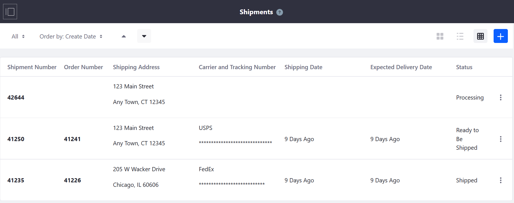
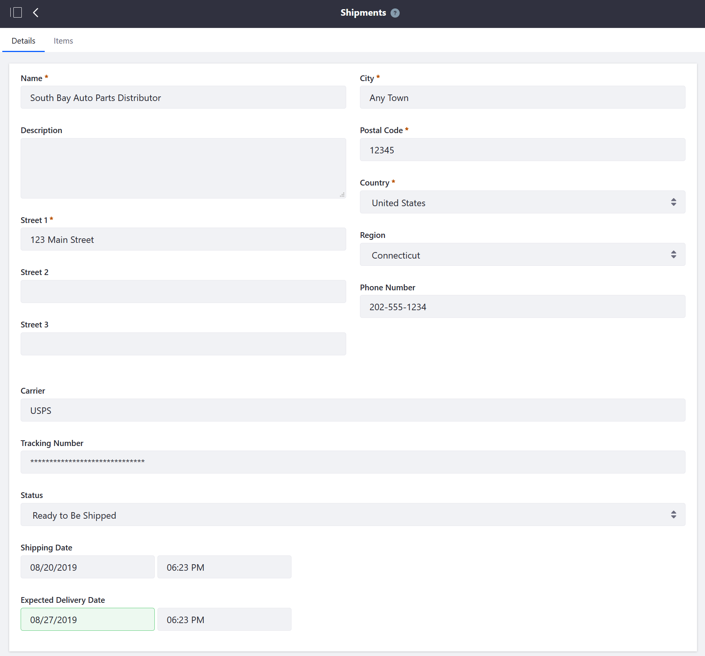
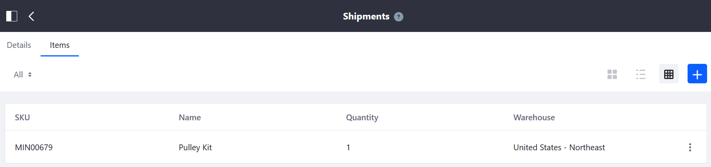

Introduction to Shipments¶
The Shipments menu is where store managers can create and track a shipment after receiving an order.
Navigate to the Control Panel → Commerce → Shipments.

The Shipments menu displays all created shipments in all statuses. Click the (+) button to add a new shipment.
Clicking on a particular shipment number (for example, 41250) displays the Shipment』s Details tab and the Items tab. (Note that clicking the Order Number (41241) redirects to the Orders menu.)
Shipment Details Tab¶
The Shipment Details tab contains the following information:

| Field | Description | | — | — | | Name | Name of the Buyer | | Description | Description field | | Street 1 | Shipping address』 first line | | Street 2 | Shipping address』 second line | | Street 3 | Shipping address』 third line | | City | Shipping address』 city | | Postal Code | Shipping address』 postal code | | Country | Shipping address』 country | | Region | Shipping address』 state or province | | Carrier | Name of the carrier | | Tracking Number | Shipping』s tracking number generated by the carrier | | Shipment Status | Dropdown menu with the options: Processing, Ready to be Shipped, Shipped, and Delivered | | Shipping Date | Date the shipment was delivered to the carrier | | Expected Delivery Date | Date the shipment is expected to arrive |
Shipment Items Tab¶
The Shipment Items Tab contains the following information:

| Field | Description | | — | — | | SKU | SKU Number | | Name | Name of the item | | Quantity | Number of items in the shipment | | Warehouse | Name of the warehouse sourcing the shipment |
In addition, clicking the (+) Add Shipment button opens a window to add more items to the order.